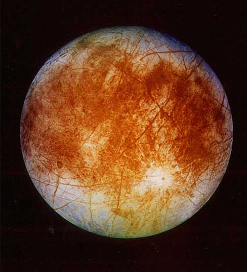
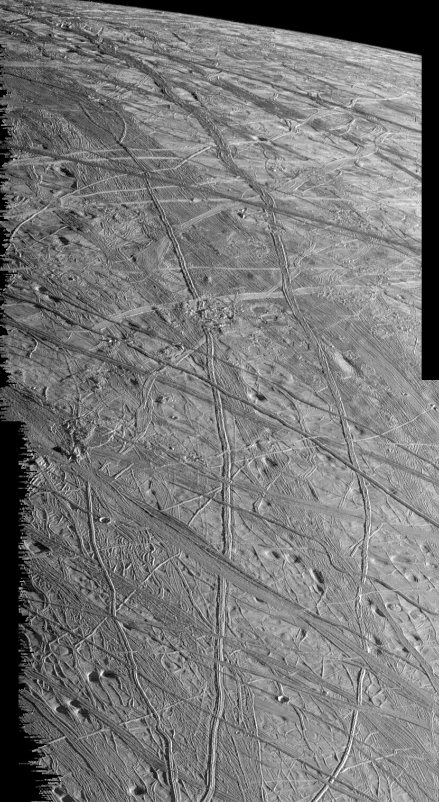
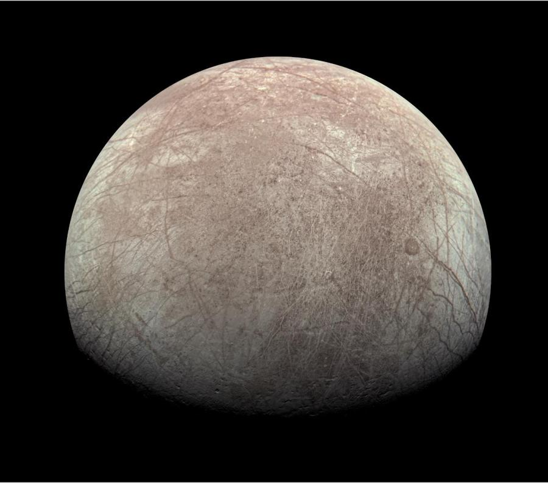

Europa
Europa to najmniejszy z czterech księżyców galileuszowych Jowisza i jedno z najbardziej obiecujących miejsc w Układzie Słonecznym w poszukiwaniu życia pozaziemskiego.
Wizualizacja Orbity
Szczegółowy Profil
Historia odkrycia
Europa została odkryta przez Galileusza w styczniu 1610 roku przy pomocy jednego z pierwszych teleskopów. Jej odkrycie (wraz z trzema innymi dużymi księżycami) zrewolucjonizowało ówczesną astronomię, udowadniając, że nie wszystkie ciała niebieskie krążą wokół Ziemi.
Charakterystyka
Jest to obiekt o rozmiarach zbliżonych do ziemskiego Księżyca. Jej powierzchnia jest najgładsza w całym Układzie Słonecznym - najwyższe wzniesienia mają zaledwie kilkaset metrów.
Powierzchnia
Skorupa Europy zbudowana jest z lodu wodnego. Niezwykle rzadko występują tu kratery, co świadczy o tym, że powierzchnia jest stale i aktywnie odnawiana. Charakterystyczna sieć ciemnych linii (tzw. lineae) to szczeliny i pęknięcia w powłoce lodowej.
Wnętrze
Pod lodową skorupą (o grubości 10-30 km) z niemal całkowitą pewnością znajduje się globalny ocean słonej, ciekłej wody o głębokości do 100 km. Głębiej znajduje się skalisty płaszcz, a w samym centrum żelazne jądro.
Możliwość istnienia życia
Europa ma trzy kluczowe składniki niezbędne do życia, jakie znamy: wodę w stanie ciekłym (ocean jest ogromny i potencjalnie słony), odpowiednie pierwiastki chemiczne z dna morskiego oraz źródło energii (ciepło pływowe generowane przez grawitację Jowisza). Uważa się ją za najlepsze miejsce do szukania życia poza Ziemią.
Parametry fizyczne
| Promień równikowy | 1560,8 km |
| Gęstość | 3,013 g/cm³ |
| Atmosfera | Niezwykle cienka |
| Skład atmosfery | Głównie tlen (O2) |
| Prędkość ucieczki | 2,025 km/s |
| Albedo | 0,64 (wysokie) |
| Nachylenie orbity | 0,47° do równika Jowisza |
Porównania
* Europa jest niewiele mniejsza od ziemskiego Księżyca, ale skrywa pod powierzchnią globalny ocean, w którym znajduje się więcej wody ciekłej niż we wszystkich oceanach na Ziemi.
Misje Kosmiczne
Sonda Galileo
NASA | 1995–2003Badanie systemu Jowisza. Dostarczyła najmocniejszych dowodów na istnienie podpowierzchniowego oceanu na Europie.
Europa Clipper
NASA | Start: 2024Misja celowana specjalnie w Europę. Wykona dziesiątki bliskich przelotów badając lodową skorupę i ocean.
JUICE
ESA | Start: 2023Misja badająca lodowe księżyce Jowisza. Zbada Europę, Ganimedesa i Kallisto w latach 30. XXI wieku.
Galeria Zbliżeniowa




Czy wiesz, że...
Gdyby człowiek stał na powierzchni Europy, Jowisz na niebie wydawałby się 24 razy większy niż Księżyc z Ziemi.
Promieniowanie na powierzchni Europy jest tak silne, że mogłoby zabić człowieka w ciągu jednego dnia.
Ciemne smugi na lodowej powierzchni to prawdopodobnie sole (np. siarczan magnezu) wyrzucone z oceanu.